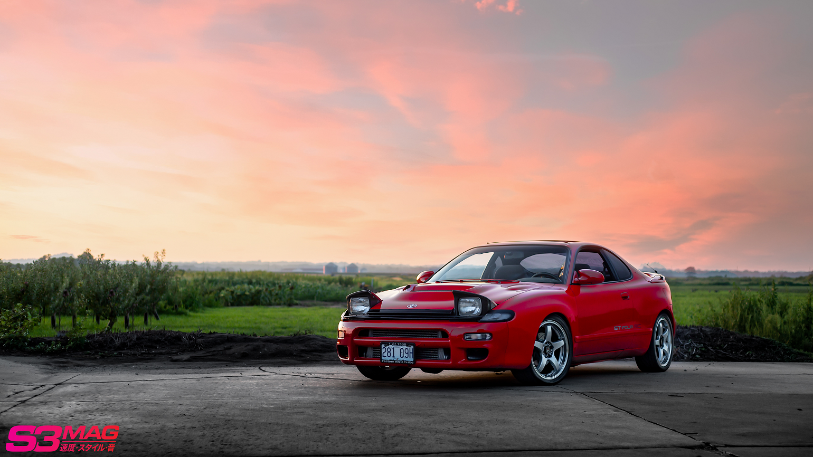

Toyota Supra (PNG)

Description
This image shows a JDM Toyota Celica with beautiful pop-up headlights and detailed bodywork.
File Type Information
PNG uses lossless compression which means that no image quality or color data is ever lost. It also uses full alpha-channel transparency which is usually used for sharp graphics.
Why This Image
I chose this format to show how well PNG handles sharp graphics as well this car was my dads car for a long time and is what got me into the JDM car scene and made me want to get and build my own car out.
Source
Source: Reddit /r/Celica